A design archive and site builder, a 3D ring builder, a logo and business card designer, and a set of animations drawn entirely in text characters.
Design and 3D
Two large builds from the last week: a design archive that has become the parts bin for my other sites, and a 3D ring builder good enough to put in front of a jeweler.
A live design reference archive of 1,520 working specimens in 31 cabinets, from palettes, type and shaders to scroll effects, ornament and ASCII art, plus a website builder that assembles a whole one-page site from them. Every specimen can be tuned on the spot and copied as standalone code.
No public link yet
Live specimens
1,520
Cabinets
31
Specimens with live controls
1,322
Gradients and shaders
133
ASCII and glyph pieces
150
Site themes in the builder
14
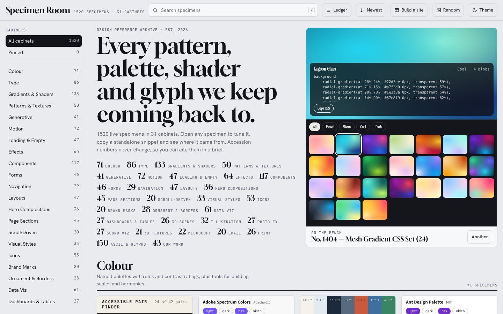
The front of the archive. The rail lists every cabinet, and a random specimen sits on the bench, running live.
How it grew
The archive went from 825 specimens to 1,520 in three days, in batches. Each batch was rendered, screenshotted wing by wing and checked before it went in, and every specimen keeps a permanent accession number, so nothing already cited moves.
Oct 26
825
Oct 26
947
Oct 27
1,080
Oct 27
1,211
Oct 28
1,248
Oct 28
1,520
The later batches came from three places: ideas rebuilt from scratch, ports from openly licensed libraries (shadcn, daisyUI, Tremor, Magic UI, Paper Shaders and others) with each license kept on the specimen, and a batch of form and section specimens written by Gemini from a house guide and held to the same checks.
What each specimen gives you
A live sample, drawn in the browser rather than shown as a picture.
Controls built from the specimen's own settings, so a palette, a seed or a speed can be changed and seen at once.
Standalone code that reproduces exactly what is on screen, with a copy button.
A permanent accession number, its source and its license, so a specimen can be cited in a brief.
How a page with 1,520 live pieces stays fast
Loaded by cabinet: each cabinet's code arrives only when one of its specimens is about to be seen.
Mounted near the screen only, a few per frame, and stopped again when scrolled away. Animation also pauses in background tabs.
A WebGL budget: browsers keep about 16 live 3D contexts, so the archive holds at most 9 and unloads the ones farthest from the middle of the screen.
Sealed styles: every specimen renders in its own shadow root, so no specimen's CSS can leak into another.
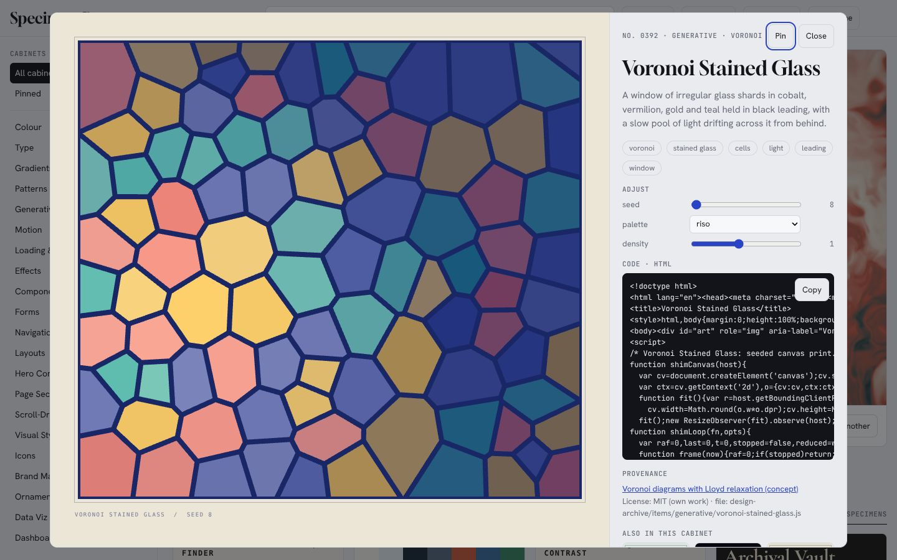
A specimen sheet: the live piece, its controls, the code and where the idea came from.
Where this site's effects came from
The picture index, the numbers that count up, the paper grain, the shader backdrops, the before-and-after sliders and the reading bar on this page were all chosen from the archive and rebuilt to fit this site's colours and appearance settings.
Specimen Builder: a website from the archive
Describe a business in a sentence, such as a record shop with a listening bar, and the builder lays out a one-page site from the archive's navigation bars, heroes, sections, forms and footers. Then it makes the result look like one site instead of a collage of seven.
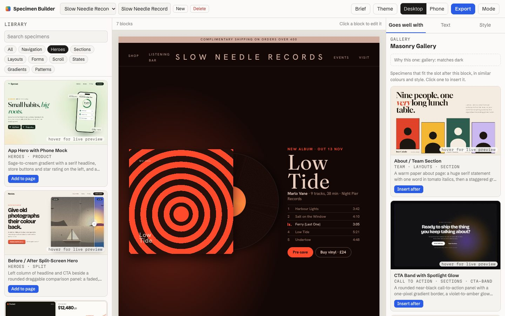
Library, page and suggestions. The panel on the right only offers blocks that fit the slot after the selected one.
What makes it helpful
Starts from a brief. Claude picks a starter page of five to eight blocks and says why each fits. Without Claude, a local scorer fills the same slots from the brief's words, so it always works.
One theme for the whole site. Fourteen themes built from the archive's own palettes and type pairings, or "from this block" to borrow the look of one you like.
Copy for your business. Claude rewrites each block's text for the brief, keeping lengths close, and every line can be edited by hand.
Exports one file that rebuilds the page on load, as a normal web page or a page ready to publish on Claude.
The hard part: one site, not a collage
Every specimen arrives with its own fonts, colours and invented brand. The re-skin pass reads every colour in a block, sorts it by tone against that block's own background, and maps it onto the theme's ramp, with strong colours becoming the accent. Fonts follow the theme, and the shop's name replaces each specimen's fake brand in headers and footers. A final pass pushes any text below the AA contrast standard back toward legibility.
Checked on 231 blocks across seven cabinets with no render errors, and on 156 text pairs in three themes with none below AA. The same check on the unthemed page finds failures, so it can fail.
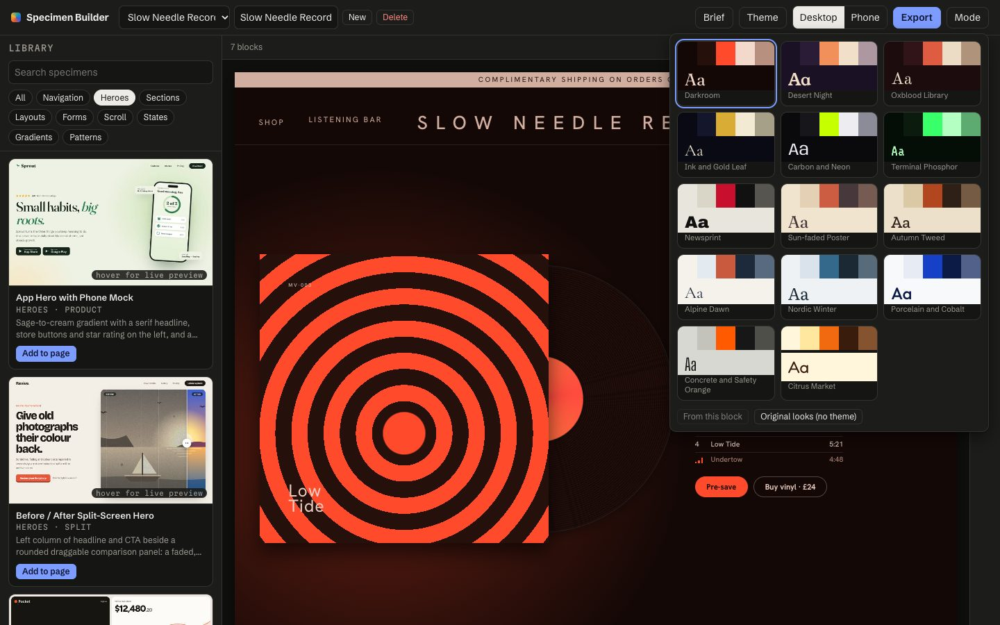
Fourteen site themes, each a palette and a type pairing from the archive.
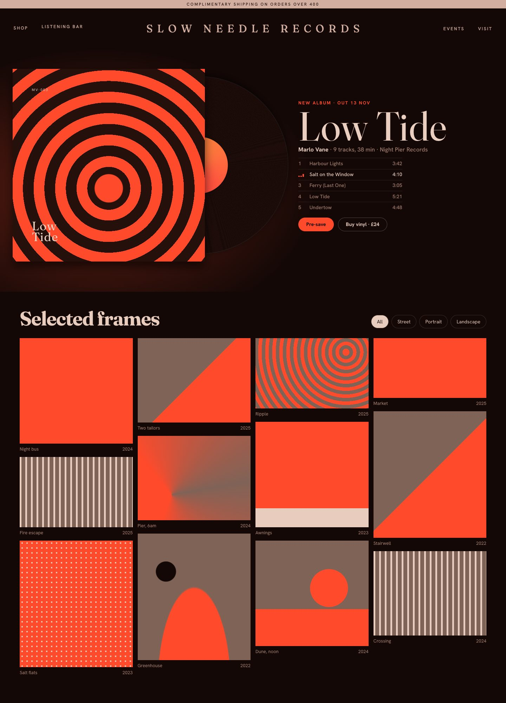
An exported page in one theme. Seven blocks from seven different specimens, one palette and one set of fonts.
How it was built
Built with Claude Code under my direction. I chose what goes into each cabinet and judged every specimen; Claude wrote the specimens, the catalog, the archive's viewer and the Specimen Builder, and Gemini added two batches of form and section specimens following a written guide. When the first version of the builder produced collages, I said so, and the second version was rebuilt around the theme and re-skin pass.
An engagement-ring builder in the browser. Pick a stone, a setting and a band and the ring is rebuilt to scale in millimetres, with diamonds that refract light the way real ones do, a live price estimate, try-on over a photo of your hand, and a casting file a jeweler can open.
The builder. The headline restates the stone in millimetres, how much of the finger it covers and what it should cost.
Built like a jeweler would build it
Stones cut to real proportions. The round brilliant uses angles from the top of the grading scale, and every shape's size comes from its standard weight formula, so a 3 ct oval and a 3 ct emerald show their real difference face up.
Settings from real jewelry CAD. Prong thickness, head height and the swell of the band under the head were measured from openly licensed casting models and matched.
Halos, side stones, pavé bands, split shanks, cathedral arches and twists, each fitted around the chosen center stone rather than placed as a fixed part.
A casting file. The ring downloads as an STL at true size, metal alone or with every stone in its seat, which a jeweler's CAD program opens.
Why the stones look real
Light is traced through each stone wavelength by wavelength, with each gem's measured refractive index and dispersion. That is where the coloured flashes of fire come from.
Four lighting rooms, from a catalogue light tent to store spotlights and candlelight, because a stone only sparkles against light and dark around it.
A light performance map shows the stone from above the way a gem lab's ASET scope does, so a badly proportioned stone looks bad here too.
Photo mode path-traces the metal for a catalogue-quality still, and video mode records a turntable clip.
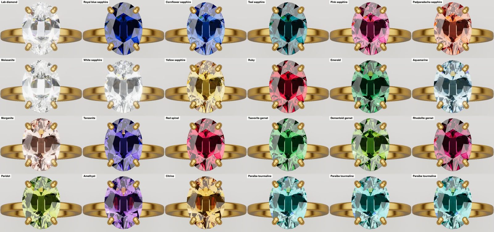
Every gemstone in the same setting. Each has its own body colour, refraction and dispersion.
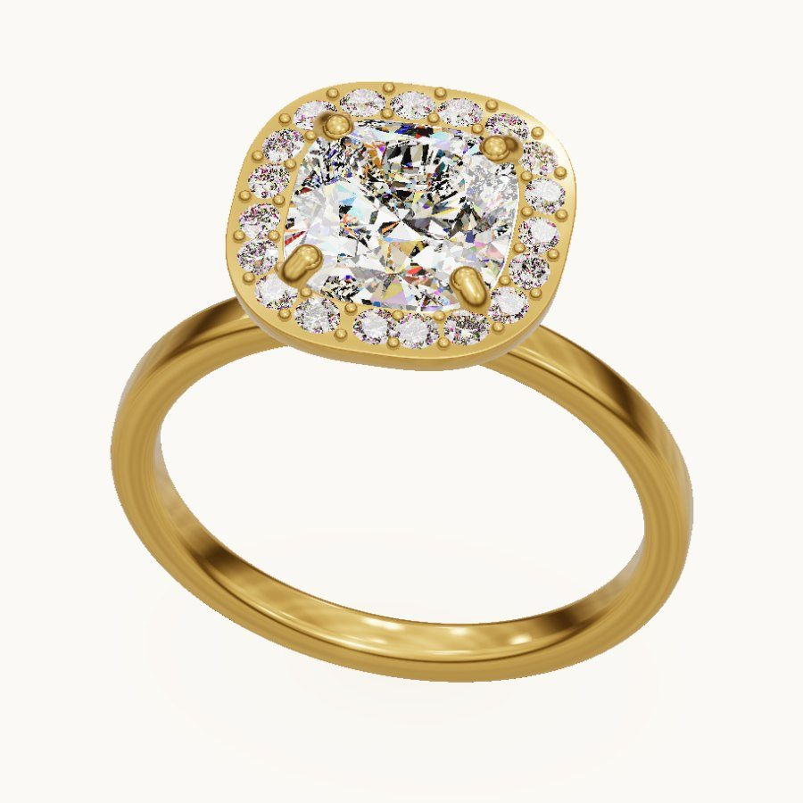
Halo, cushion cut.
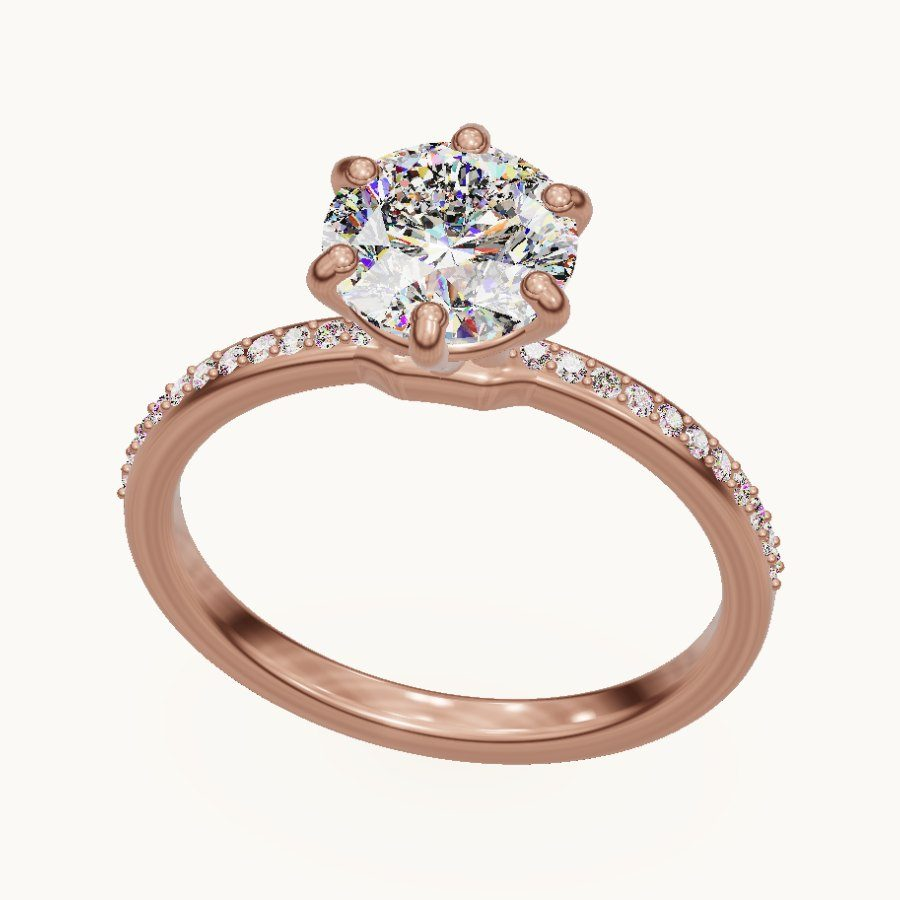
Six prongs over a pavé band.
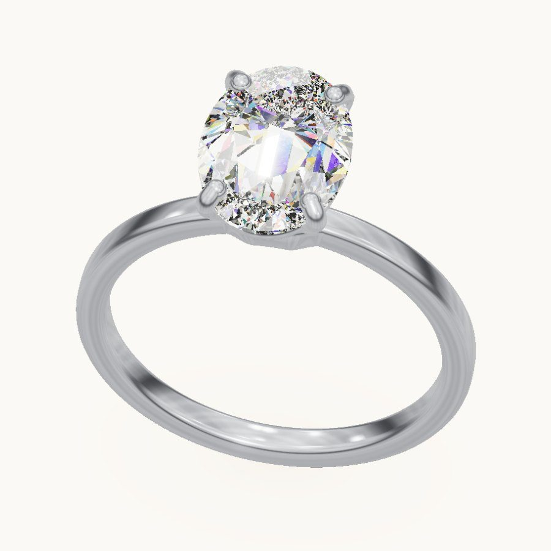
A plain solitaire in platinum.
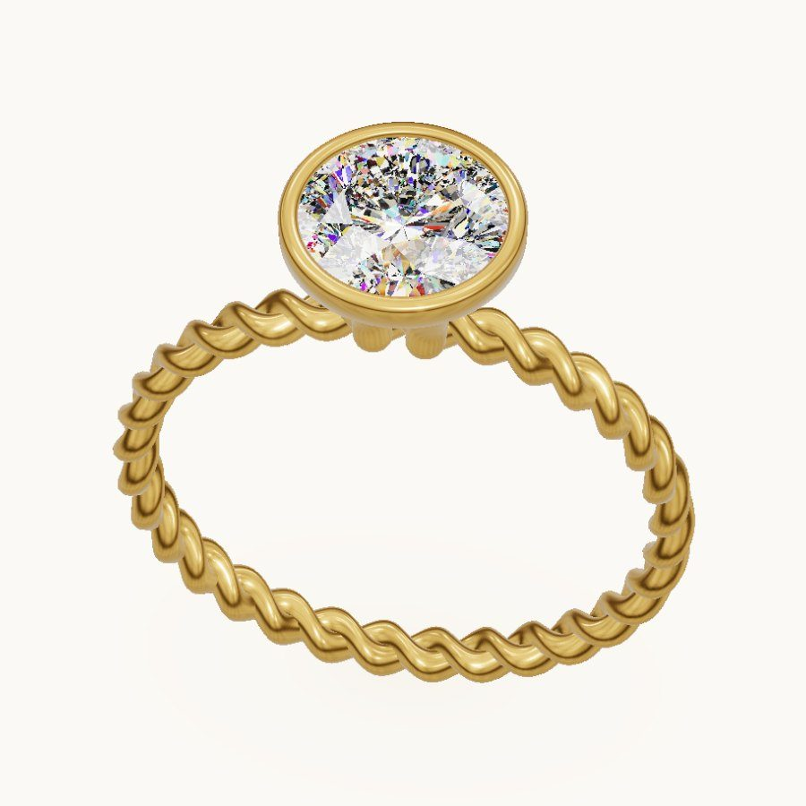
Bezel on a twisted band. All four are renders from the builder, not photos.
Help with the decision, not just the picture
What it should cost: a range built from current online retail listings, scaled by the stone's grade, plus the metal's weight in grams worked out from the ring's own volume.
Try-on: a hand-tracking model finds the ring finger in a photo or the live camera and sits the ring on it, with a soft shadow on the skin. It all runs on the phone.
Compare: pin up to three builds and see them side by side, or copy a short design code to share one.
True size shows the ring at its real size on screen.
Ready for a real store
The builder drops into a jeweler's own site. I built four invented jewelry shops around it, each in a different style, where every product photo in the catalogue is rendered from the builder itself, so a store can add a design without a photo shoot. The pitch to a store: a modern site, online booking and a ring builder its customers can play with.
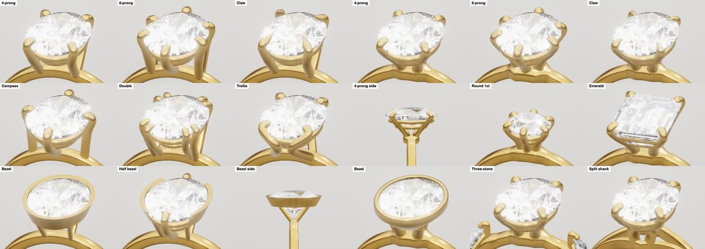
Head styles, checked close up against real settings.
How it was built
Built with Claude Code over two days and more than twenty published versions. I set the bar, a builder that could sit on a real jeweler's site, and reviewed every round against real ring photos; Claude wrote the 3D modelling, the optics, the pricing, try-on and the demo stores, researched openly licensed ring CAD to check its proportions against, and rendered the comparison sheets used to judge each change.
A black-and-white logo builder that works like a print shop. Type a name, pick a texture and export a mark you could print the same day, then turn it into a business card and preview the foil before you order.
The logo tab. The proof sits on the left; every texture, gradient and type setting is on the right. It opens on CATS so there is always something to work on.
Made for one ink
Thirteen textures: halftone, lines, crosshatch, rings, stipple, speckle, cellular, contour, mezzotint, grain, dither, smooth and solid, each with its own density, angle and jitter.
True 1-bit output. Besides grayscale, a mark can be forced to pure black and white, with or without grain or dithering, so it prints cleanly in a single ink or as a stamp.
Gradients that stay printable: linear, radial or reflected, set by how much ink sits at each end rather than by colour.
Exports as PNG at up to 4,096 pixels or as SVG, and good versions can be saved to favourites and shuffled from.
From logo to business card
The second tab lays the logo onto a card front and back. Move the pointer and the card tilts under a light, so silver, gold or holographic foil catches it the way a printed card would. It then exports the card art and a separate foil mask for each side, which is the file a printer asks for when a card has foil.
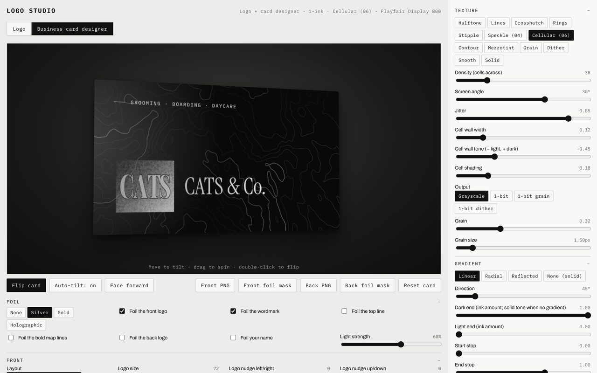
The card tab, with silver foil on the logo and the name.
How it was built
Built with Claude under my direction. I made it to design the logo for my own consulting business and picked the final mark with it, then took my branding off so anyone can use it. Claude wrote the textures, the type handling, the 3D card preview and the exports.
Turns any 3D model into a sculpture of fuse beads hanging on fishing line, shows it as a photograph in an empty classroom, then plans every strand and simulates a machine that strings them.
Open StrandfallRuns in the browser. Best on a laptop or desktop; hold the camera still and the picture sharpens like a long exposure
Figures, posed children and scanned animals
7
Fuse-bead colours
30
Hours to string the raised-hand child by hand
116
With the stringing machine
81
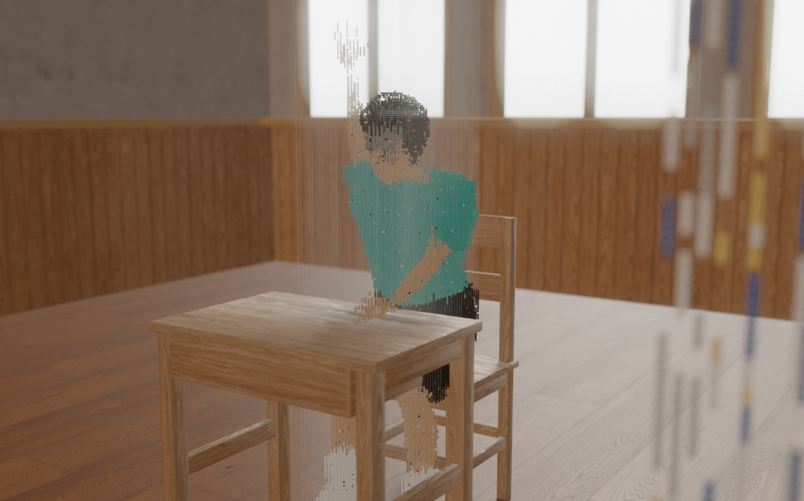
A child raising a hand, in about 43,000 beads. Inspired by Yuka Numata’s bead figures in an abandoned school in Gero, Japan.
From a model to a sculpture
Any 3D model goes in. Three children posed in Blender come built in, plus four real photogrammetry scans of a dragonfly, a swallowtail, a tree frog and a goby. A .glb, .obj or .stl can be dropped onto the room, animation included.
Strands hang from a ceiling grid. Each strand gets a bead wherever it passes through the figure, at true bead size, filled solid or as a skin of chosen depth.
Colours come from the model itself, sampled from its textures and matched by eye-accurate colour distance to a real fuse-bead palette.
Afterimages. Earlier moments of the motion can be strung into the same strands, fading to white, with flicker, tearing and signal noise on top, after the glitches the artist builds in on purpose.
Looks like a photograph
A real classroom: oak panelling, a worn floor and plaster from scanned materials, lit only by its tall windows.
A real lens. While the camera is still, hundreds of slightly shifted frames are blended into one, which gives true depth of field, soft shadows and film grain.
A walk-past camera moves at eye height, so the figure pulls together and falls apart the way it does for a visitor.
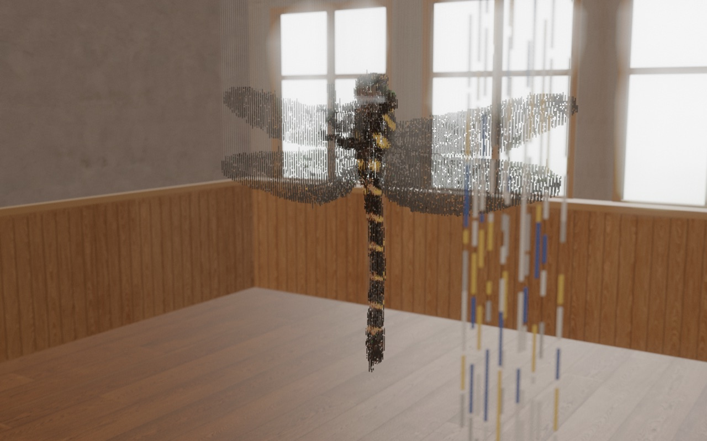
A golden-ringed dragonfly, from a real scan.
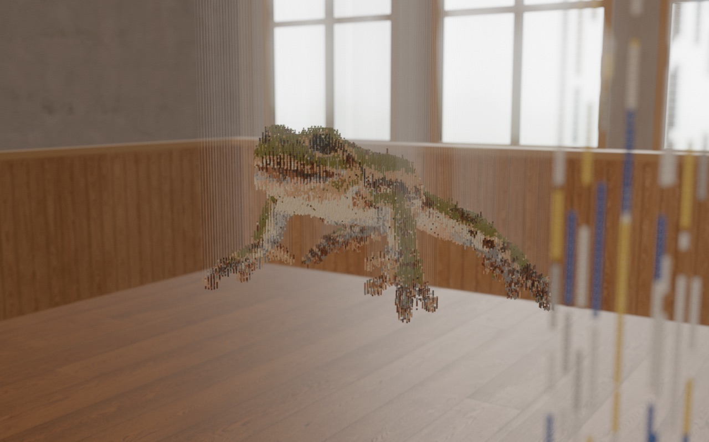
A Japanese tree frog, about a metre long.
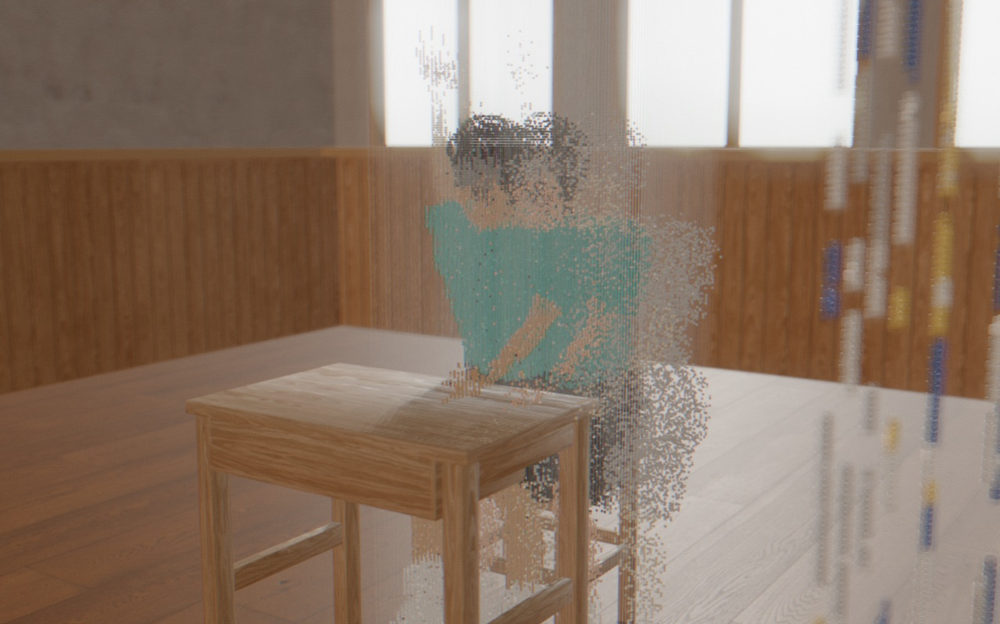
The afterimage look.
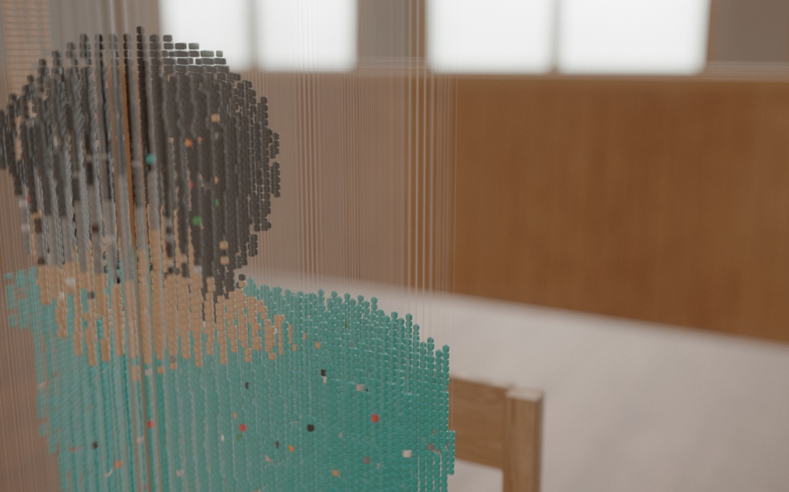
Close up, every bead is a real 5 mm bead.
A plan someone could build from
A drilling map of the ceiling plate, in millimetres, with every hole numbered by row and column.
A card for every strand: how much line to cut, where it hangs, and each block of beads with the exact mark for the stopper under it.
A shopping list in bags of beads, spacers, crimps and spools of line, plus the hanging weight and the hours it will take.
Click any strand in the room to see its card.
A machine to string it
A semi-automatic stringer designed from off-the-shelf parts: twelve colour tubes, a servo under each that lets one bead fall, and a motorised carriage that collects them in order.
The app writes the machine’s program and can drive it over USB from Chrome. A simulation shows it filling any strand.
Honest about the gain: the machine sorts 30,000 beads in about seven hours, but threading, crimping and hanging are still hand work, so it takes a build from about 116 hours to about 81.
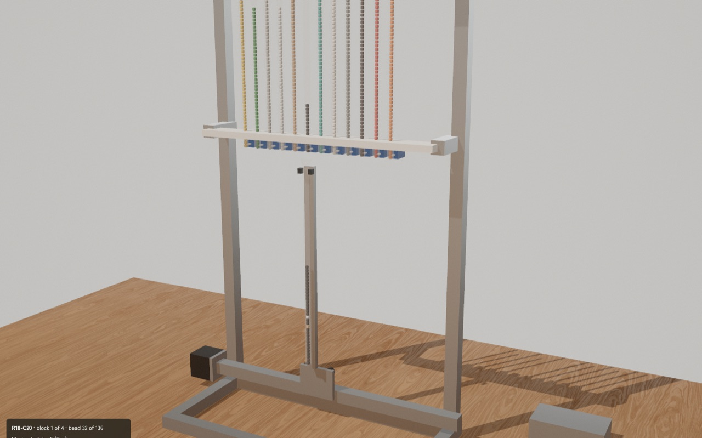
The stringer in the simulation: it moves the magazine under each colour and releases one bead at a time.
Live animation drawn entirely in text characters: spooky Halloween scenes, northern lights over a lake, a psychedelic light show, two landmarks and my cat turning in 3D, and a gallery of animal processes.
Seven pieces. Each opens fullscreen in the browser
Pieces
7
Video files
None
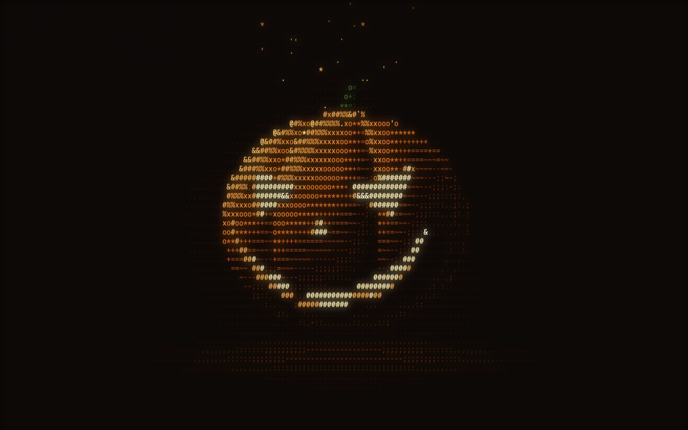
The Lantern: a 3D pumpkin, ray-marched and lit from inside, so the carved face glows and the shading turns as it sways.
Hollow Hours
Fifteen spooky scenes made to run fullscreen as a Halloween background, from a candlelit jack-o'-lantern to homages to The Shining, The Ring, Nosferatu and Psycho.
Open Hollow HoursArrow keys or 1–9 switch scenes; it cycles on its own
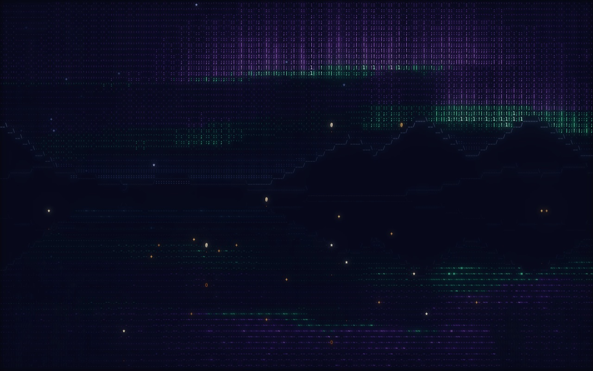
Two aurora curtains in fine vertical strokes, green at the base and violet above, glowing behind the peaks and reflected in the lake.
Aurora Lake
Northern lights over a mountain lake, made to be sat with: the light breathes at six breaths a minute, the water ripples where you move, and clicking releases a paper lantern into the sky.
Open Aurora LakeMove over the water, click to release a lantern, press S for sound
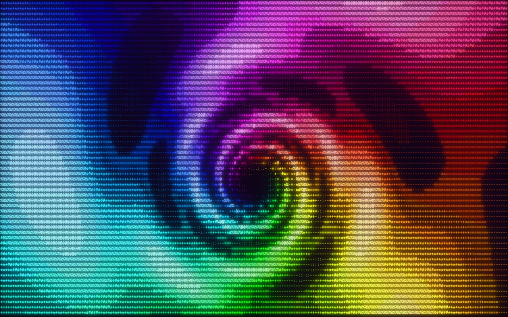
Wormhole mode: falling down a spiralling tunnel. Every character carries its own colour, and the palette keeps flowing.
Prism Trip
A psychedelic light show in full-colour text with eight modes, from a wormhole and a kaleidoscope to a morphing fractal and living reaction-diffusion patterns. It also runs natively inside AgentForge, my Mac app.
Open Prism TripKeys 1–8 switch modes; C auto-cycles; F goes fullscreen
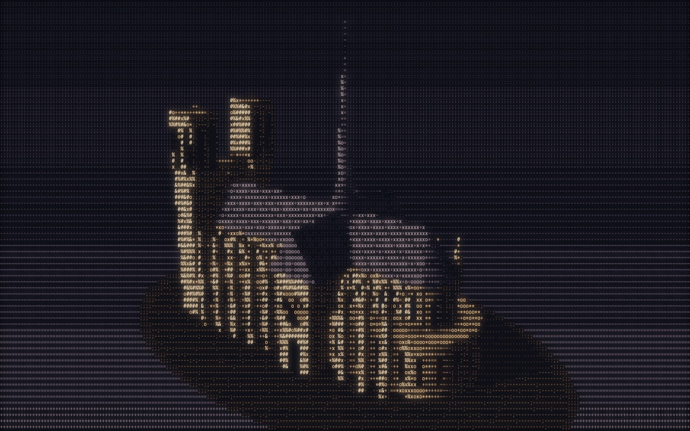
Golden hour: the west towers, the nave, the transept and the spire, with flying buttresses down the flank.
Notre-Dame, turning
The cathedral as a real 3D model drawn in characters, turning on a turntable, with day, golden-hour and floodlit-night lighting.
The Art Deco setbacks, mooring mast and antenna rising above Midtown.
Empire State, turning
The Empire State Building and the Midtown blocks around it, turning in 3D, with the crown lit orange and purple after dark. You can change how the text itself looks.
Each plate shows the live animation, its real-world scale, the stage it's in right now, what to watch for and the key terms.
Living Processes
A teaching gallery of eight animal and ecosystem processes animated in text, from the Great Migration to metamorphosis, each opening fullscreen with notes on what to watch for.
Each piece writes a brightness and a colour into a grid of character cells, and one renderer turns brightness into characters from a density ramp. Some are simulations, like fire, rain and flocking birds; the buildings and Skippy are real 3D models ray-marched one cell at a time. Nothing is a video: every frame is computed in the browser as you watch.
How it was built
Built with Claude Code. I set each brief, pushed it past the obvious, and chose what stayed.